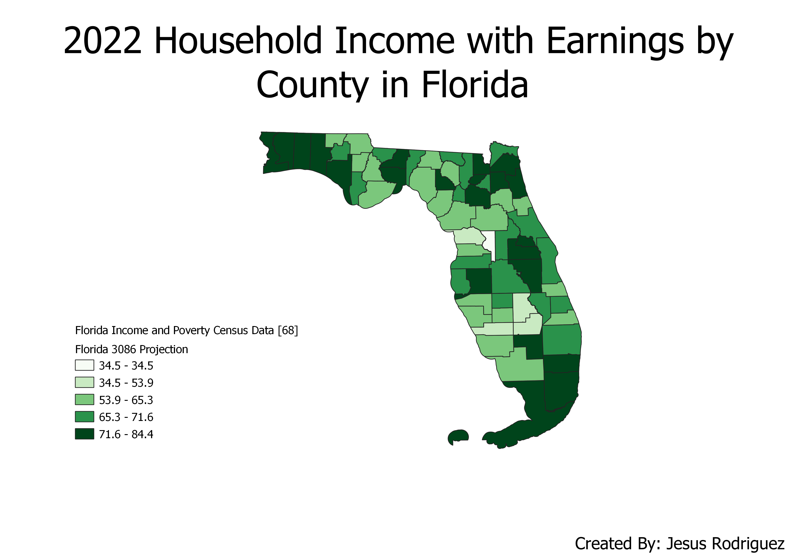

Homework 6: Florida Census Data choropleth
Jesus Rodriguez
My chloropleth map uses data from the US Cenus Bureau regarding "MEAN INCOME IN THE PAST 12 MONTHS (IN 2021 INFLATION-ADJUSTED DOLLARS)". I used a 3086 projection specific to Florida and its counties and used a green gradient to illustarte counties with higher household income on average with a darker hue.

Data used for this project
CSV dataset
Link to shapefile